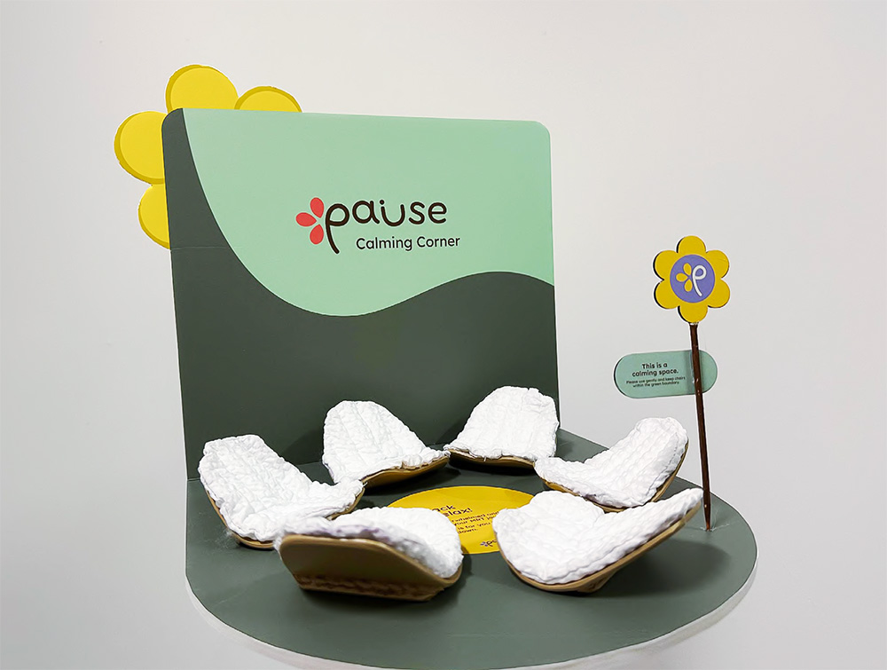
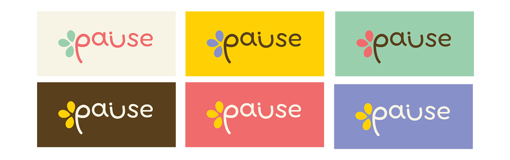

THE APPROACH
Grounded in the insight that individuals often prefer privacy and subtle support, the design focuses on creating a safe environment that does not draw attention or pressure interaction. The space features modular “petal” seats that form a flower, while allowing users to rearrange them to sit alone or with others based on their comfort level. A gentle rocking function encourages fidgeting, providing a calming, rhythmic outlet to ease anxiety.
LOGO
The logo features 2 core ideas of our solution: The flower and rocking chair.
The typeface Fredoka was chosen for the logo to convey a soft, friendly, and welcoming tone. For the body copy, Lexend was used due to its focus on readability and legibility, making it especially suitable for the target audience who may have difficulty reading when they are overwhelmed.

TOOLS
Adobe Illustrator